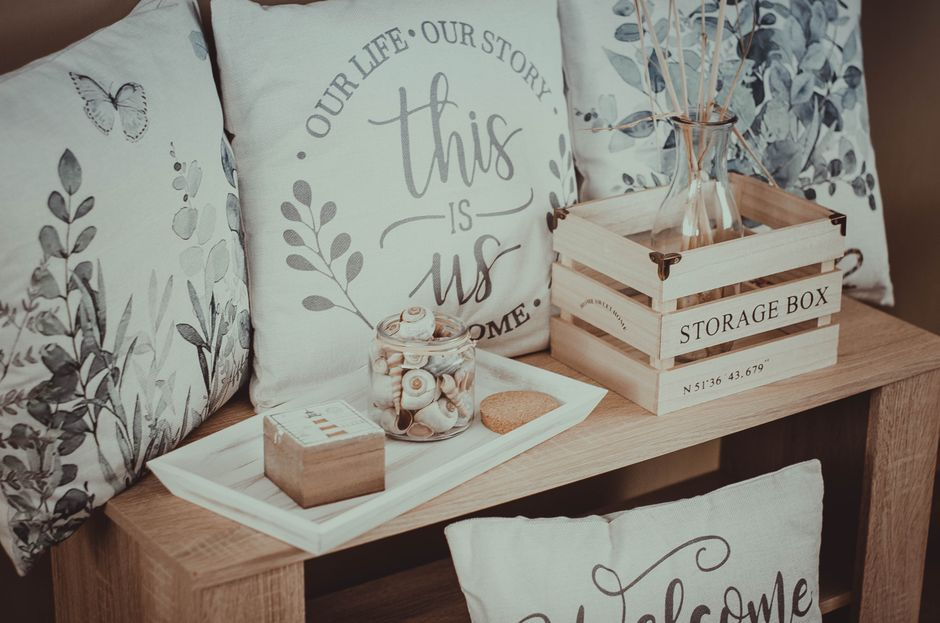

Formas de aprovechar las cajas multifunción para maximizar el espacio en tu hogar

Photo: Elena Golovchenko / Pexels
Las cajas de almacenamiento multifunción (con tapa, compartimentos o ruedas) son prácticas en un espacio pequeño. Así puedes elegirlas y usarlas con seguridad.
Elige bien las cajas
- Mide el espacio (estante, debajo de la cama, armario) antes de comprar.
- Prefiere cajas del mismo tamaño que se apilen bien.
- Elige material resistente, con asas y una tapa que ajuste bien.
- Las cajas transparentes facilitan encontrar el contenido.
Clasifica antes de guardar
Ordena tus cosas por categorías (ropa, calzado, cables, papeles). No guardes lo que ya no necesitas: una caja llena de cosas inútiles no ahorra espacio.
Etiqueta
Una etiqueta o un código de colores en cada caja permite encontrarla sin abrirlo todo.
Apila con seguridad
- Pon las cajas pesadas abajo y las ligeras arriba.
- No superes el límite de peso indicado por el fabricante.
- No apiles por encima de la altura de los hombros: una pila que cae puede herir.
- No bloquees nunca una salida, una ventana ni un radiador.
Ten cuidado con lo que guardas
No guardes productos inflamables, productos químicos ni aerosoles en cajas cerca de una fuente de calor o de un enchufe. Mantén los productos de limpieza fuera del alcance de niños y mascotas.
Mantenimiento
Pasa un paño húmedo por las cajas una o dos veces al año. Si guardas ropa blanca, asegúrate de que esté bien seca para evitar humedad y moho.
Con buena clasificación, el tamaño adecuado y un apilado prudente, estas cajas hacen un espacio pequeño más ordenado y seguro.